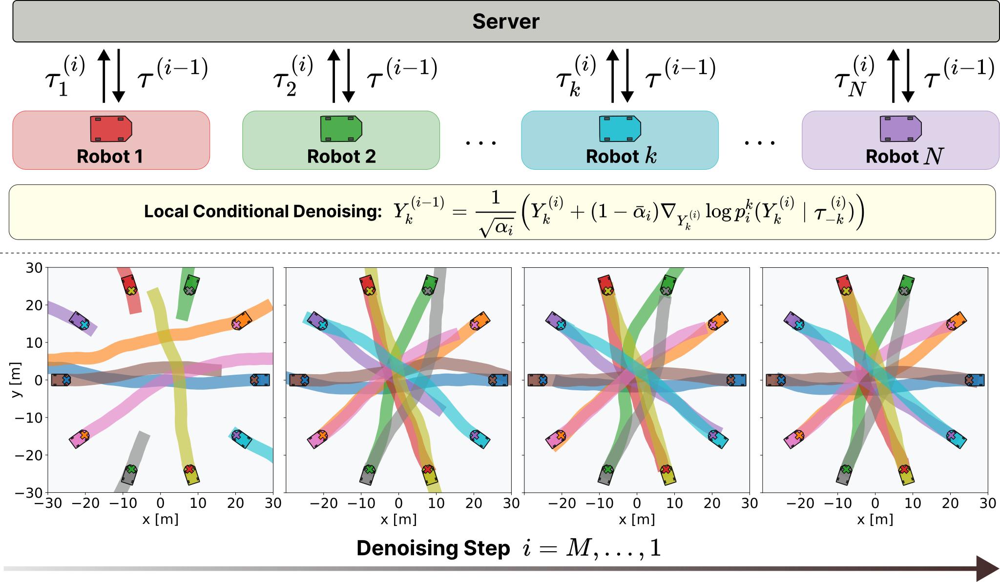
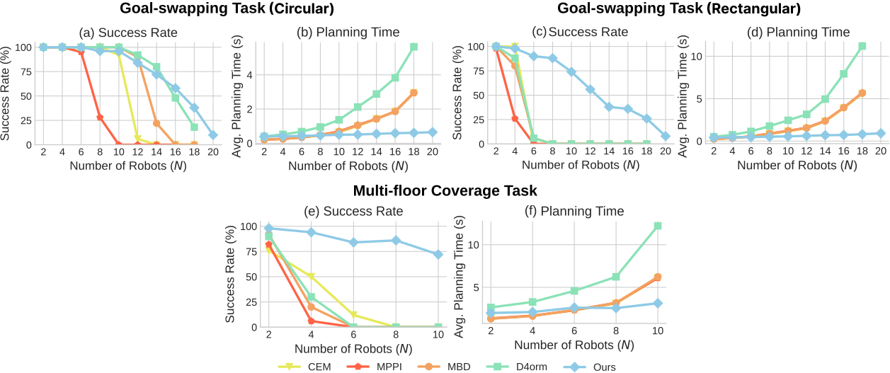

Trajectory optimization for multi-robot systems remains challenging due to high-dimensional coupled trajectory spaces and non-convex interaction constraints. We propose Distributed Model-Based Diffusion (DMBD), a distributed server-robot framework that decomposes the reverse diffusion process into local conditional diffusion denoising processes for each robot to perform independently. By decomposing the global inference problem from the joint multi-robot trajectory space into individual robot trajectory spaces, DMBD reduces the complexity of the optimization problem and improves scalability with increasing team size. Furthermore, DMBD provides a modular formulation in which each robot only requires knowledge of its own dynamics, objectives, and constraints, while coordination is achieved through trajectory information broadcast by a server. Extensive experiments demonstrate that DMBD enables scalable, sample-efficient, and coordinated planning across challenging multi-robot tasks.

The proposed DMBD framework extends Model-Based Diffusion (MBD) from
centralized trajectory optimization to distributed multi-robot inference.
At every denoising iteration:
1. Each robot maintains its own noisy control trajectory.
2. Robots independently perform local conditional denoising using their
local dynamics, objectives, and constraints while being conditioned on the latest trajectory estimates of other robots.
3. Updated state trajectories are transmitted to a server.
4. The server aggregates and broadcasts trajectory estimates to the robots for the next denoising iteration.
Goal Swapping with 20 Circular Robots: Twenty circular robots exchange their initial positions with the robots on the opposite side of the circle while avoiding inter-robot collisions.
Goal Swapping with 20 Rectangular Robots: Twenty rectangular robots exchange their initial positions with the robots on the opposite side of the circle while avoiding inter-robot collisions.
`Multi-Floor Robot Coverage with 10 Robots: Heterogeneous robots navigate multiple floors (z=0 and z=5) to reach their designated goals while avoiding collisions. Smaller robots (red) can use the elevators (yellow), while larger robots (blue) remain on the first floor. Robots do not know each other's goal locations.
Parking Scenario: Two robots coordinate parking maneuvers in a constrained environment. However, the problem is that the orange robot is already on its goal location while blocking the path of the orange robot. Thus, for the orange robot to park, the blue vehicle must first move out of the way, and then return to its original position without collisions. The robots do not know the goal locations of each other.
Parking Scenario (with 6 robots):
Rush Hour: The red robot is to move to the right to reach its goal locations, but its path is blocked by other robots whose paths are also blocked. The robots must coordinate to move out of the way for the red robot to reach its goal without collisions and knowledge of the goal location of the red robot.
Rush Hour Scenario (with 6 robots):
